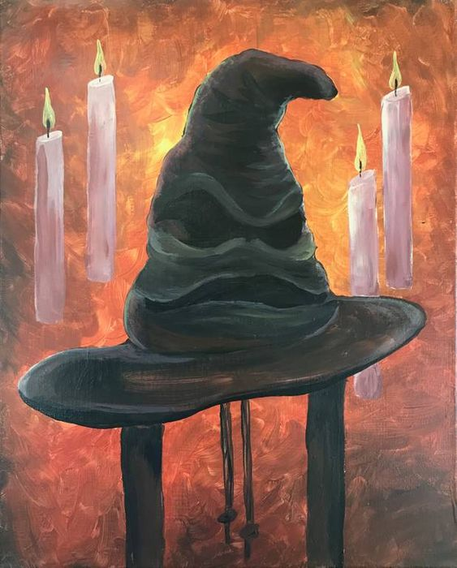

Sorting Hat
The enchanted hat that determines which Hogwarts house a student belongs to, based on their qualities and desires.
The enchanted hat that determines which Hogwarts house a student belongs to, based on their qualities and desires.
The legendary cloak that renders the wearer invisible, allowing them to move undetected through the world.

The magical map of Hogwarts that reveals all the secret passages and locations within the castle, created by Moony, Wormtail, Padfoot, and Prongs.
The small, winged ball used in Quidditch, sought by Seekers to end the game and earn their team 150 points.

The legendary alchemical substance with the power to grant immortality, sought by Nicolas Flamel and protected by Dumbledore.
The magical mode of transportation used by witches and wizards for travel and Quidditch.
The mirror that shows the deepest desires of the heart, tempting those who gaze into it with visions of their greatest wishes fulfilled.
The most powerful wand in existence, capable of performing feats of magic beyond the ability of any other wand.
The magical basin used for viewing memories, allowing users to revisit and examine past events.
The powerful and enchanted sword of Godric Gryffindor, imbued with the ability to destroy Horcruxes.
The magical time-travel device used by Hermione Granger to attend multiple classes simultaneously.
One of the Deathly Hallows, capable of bringing back shades of the deceased from the afterlife.